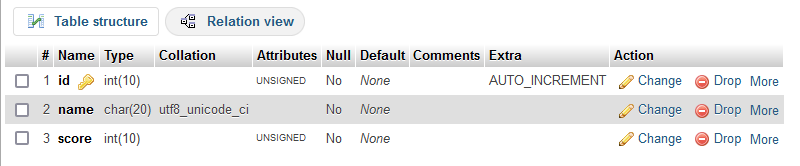
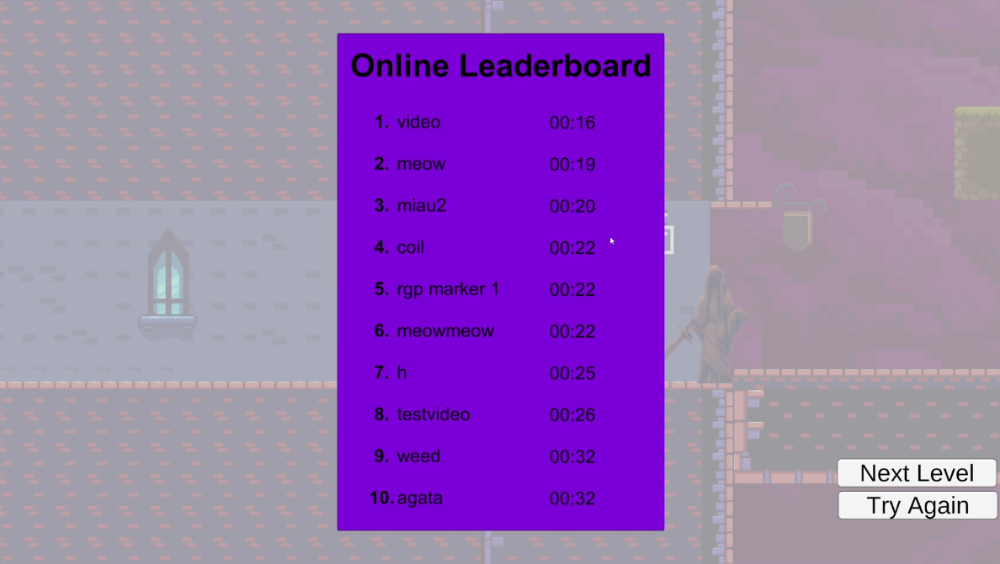

Heaven's Blade is a 2D platformer prototype with a focus on speed and movement that I made for uni over the course of six weeks. The prototype includes an online leaderboard and many features to create an interesting character controller. The online leaderboard was built using PHP and MySQL which took up the majority of development time.
For this prototype, I had the goal of creating a character controller that had considerable weight to it and felt like it carried momentum alongside giving the player plenty of movement options to combine and master. After some research and finding inspiration from a variety of other character controllers I decided to implement the following: variable fall speed, walljump, maximum terminal velocity and airdashing.
The goal for this prototype was to create an experience which the player could master and improve at. I felt that there needed to be some measure of improvement and also that some form of competition would aid this design goal so I decided to implement an online leaderboard using Unity's networking library, PHP and MySQL.
The first thing I needed to do was create a PHP script and find somewhere to host it. I decided on 000webhost as this allowed me to host the PHP files and SQL database for free. I began by creating the database which I would then write my PHP script based off of and access with a C# script in Unity.

I had never written any PHP at this point and I did not have enough time to begin learning from the ground up so I created a script by bringing together different specific aspects of the language and this was the result:
// Define the database to connect to
define("DBHOST", "localhost");
define("DBNAME", "xxxxx");
define("DBUSER", "xxxxx");
define("DBPASS", "xxxxx");
// Connect to the database
$connection = new mysqli(DBHOST, DBUSER, DBPASS, DBNAME);
if (isset($_POST['retrieve_leaderboard']))
{
// Create the query string
$sql = "SELECT name, MIN(score) as score FROM Highscores GROUP BY name ORDER BY score LIMIT 10";
// Execute the query
$result = $connection->query($sql);
$num_results = $result->num_rows;
// Loop through the results and print them out, using "\n" as a delimiter
for ($i = 0; $i < $num_results; $i++)
{
if (!($row = $result->fetch_assoc()))
break;
echo $row["name"];
echo "\n";
echo $row["score"];
echo "\n";
}
$result->free_result();
}
elseif (isset($_POST['post_leaderboard']))
{
// Get the user's name and store it
$name = mysqli_escape_string($connection, $_POST['name']);
$name = filter_var($name, FILTER_SANITIZE_STRING, FILTER_FLAG_STRIP_LOW | FILTER_FLAG_STRIP_HIGH);
// Get the user's score and store it
$score = $_POST['score'];
// Check if a record with the same name exists
$existing_record = $connection->query("SELECT * FROM Highscores WHERE name = '$name'")->fetch_assoc();
if (!$existing_record) {
// Insert the new record
$statement = $connection->prepare("INSERT INTO Highscores (name, score) VALUES (?, ?)");
$statement->bind_param("si", $name, $score);
$statement->execute();
$statement->close();
} elseif ($existing_record && $existing_record["score"] >= $score) {
// Delete the existing record with a higher score
$connection->query("DELETE FROM Highscores WHERE name = '$name' AND score < $score");
// Insert the new record
$statement = $connection->prepare("INSERT INTO Highscores (name, score) VALUES (?, ?)");
$statement->bind_param("si", $name, $score);
$statement->execute();
$statement->close();
}
}
// Close the database connection
$connection->close();
I then created a Unity networking script in order to access the PHP script and the database. After adding UI elements and other structure in Unity I was left with this result.

Original Framework by Staffs Uni
GothicVania Cemetary by Ansimuz
GothicVania Town by Ansimuz
Medievil Pixel Art by Blackspire
Monster Creatures Fantasy by Luiz Melo
Village Props by Cainos
The prototype was worked on from February 2023 to March 2023 for the Rapid Games Prototyping module at Staffs Uni.
I think my implementation of the online leaderboard was well done and I am proud that I was able to implement this into a project as well as other things and have it make sense be relatively polished given the time I had and the need to work on other projects simoultaneously. I am also pleased that I was able to realise some part of the idea I had for the character controller and I believe I learnt a lot about commons techniques to make platformers feel good to play through the process of making the character controller.
With the time I had I chose to dedicate towards the player character's movement and the online leaderboard. This left me with less time to create levels, enemies and mechanics; I think these are easily the areas where the prototype lacks the most and it leads to the game not being the most fun because there are not interesting challenges to try and completely faster or more precisely. If I had more time I would properly consider the enemy, mechanic and level design and more greatly flesh out this area of the game.
Rhys Elliott 2025. rhyselliottdev@protonmail.com